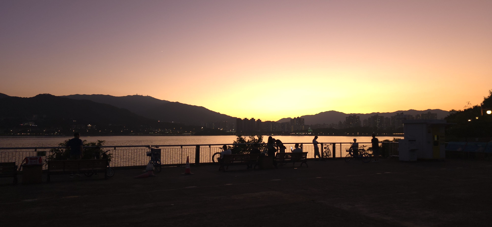
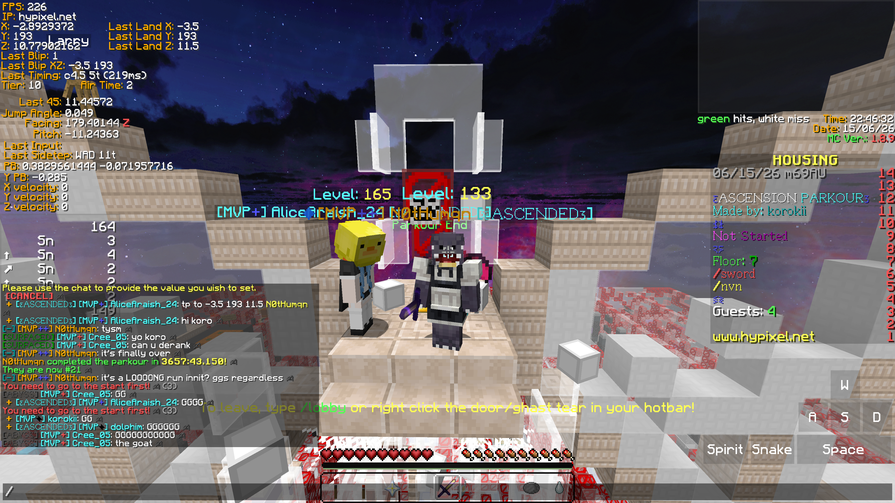
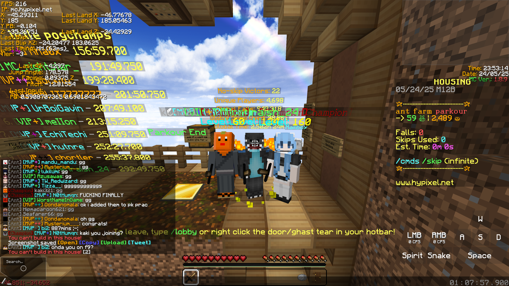
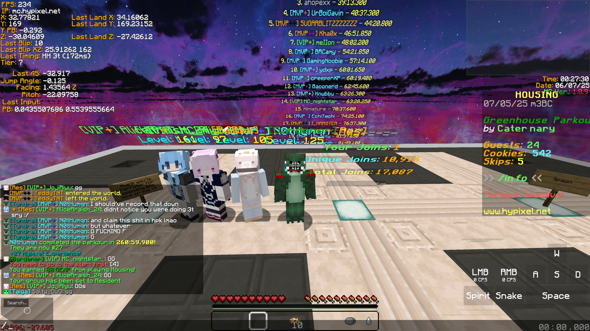
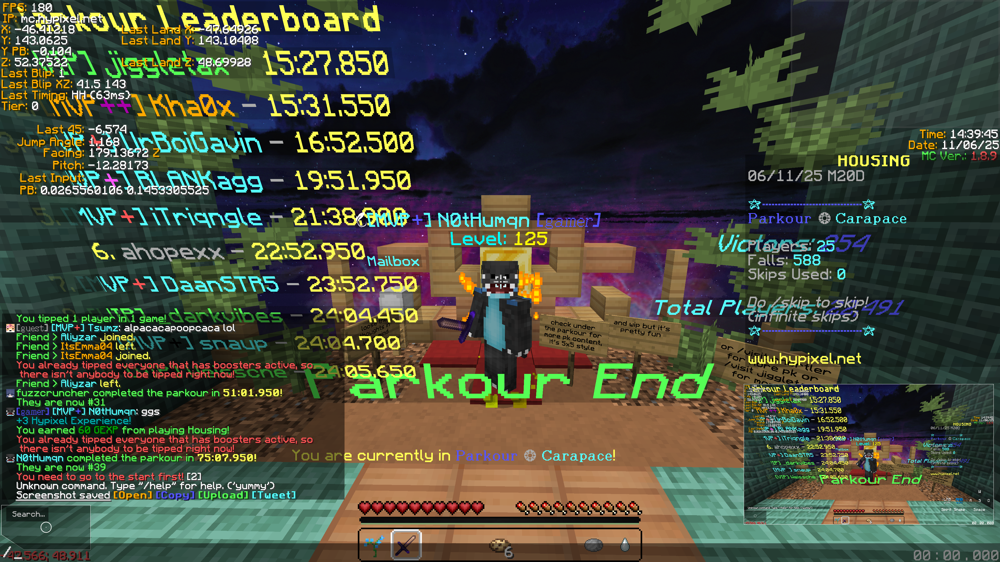
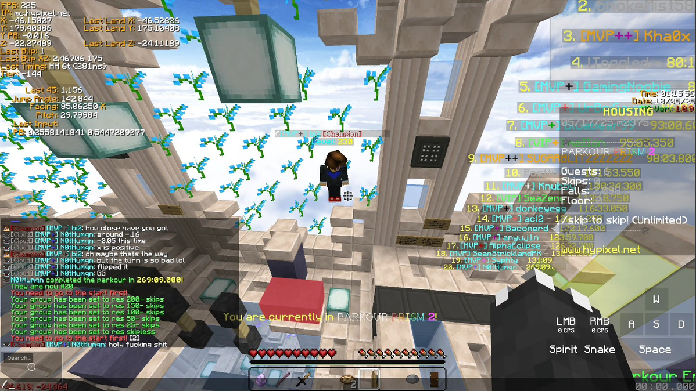
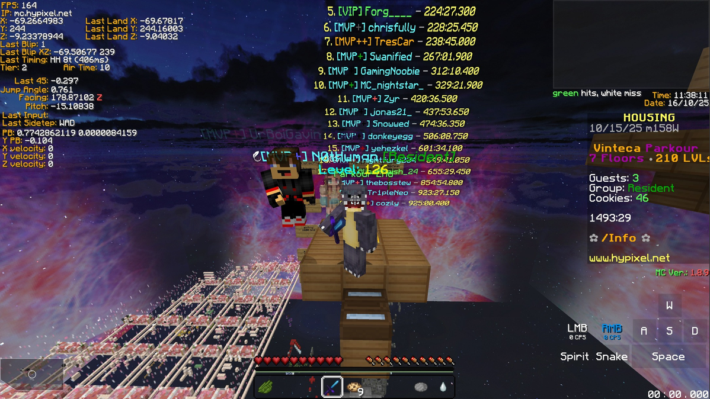

> The Charizard that is suffering from the wra(i)th of Electronic Engineering in HKUST.
> Meanwhile working as an intern in China Mobile HK.
> Create original character doodles sometimes.
> While I messes around in both academic and workplace, personally I play osu! and Minecraft Technical
Parkour a lot.
> Besides from the gaming aspect, I ride with bike and cruises around a lot in real life as well, for
capturing different photos.
Even though I don't play osu! as often as Minecraft Technical Parkour, in most case, I play osu! just
for fun, enjoying
different songs while tryharding myself by tapping at the right beat.
Throughout the years, I had sharpen my aiming skills slowly. Though, I will still need to work on my
tapping
especially long streams, because my consistency drops as time varies.
Technically I started playing Technical Parkour a bit after I started my osu! journey. However, it
also shocked
me for how much progress I learnt through out the journey, how many people I had connected through
Hypixel Housing,
HPK Network etc.
When I started pivoting from Bedwar, to Skyblock, to Duel and finally, Technical Parkour, I
basically have nothing, not even
the slight glimpse of how timing/gametick works. I started out as a toddler in parkour, and I still
remember when I sturggle so much on how to
do Triple Neo, then my first Backward Momentum (BWMM) jump, 45 strafes; various techniques and you
name it, all learnt from different clips,
helps from my dearest friends, my sheer determination and patience.
Till today, I still try to assist different players in different map (mostly in Hypixel but still),
teaching them techniques to overcome
different jumps, and share the joy when they finally beat their guantlet at their current stages.
Surely I will need extra way to discharge my energy besides from just playing computer games, so now
here it is.
Normally when I rent a bike, specifically locobike, I cruise around the praya with decent speed (to
feel the wind for sure).
Ironically, accident happens, ranging from crashing or bike-part fail (when renting proper bikes),
and from the years with the bike, I know how to
deal with gear problems to get my hand dirty.
I'm still a layman in photography, but sometimes the photos from the trip can be quite incredible
that I would love to capture them down,
here are some of them I had taken from late September, 2026 in Tai Po, I still found those
photos extraodinary and special based on my internal ruler.

Personally I own a convertible laptop, most of the time I flip the notebook into a tablet mode
then start drawing something inside, either for formal and informal stuff. Most notable being my
fursona that is still work in progress.
In addition to that, besides from using FireAlpaca as my primary drawing program for raster image,
I also use OneNote to draw either formal and informal stuff for vector-based image.
Surely, my drawing skill isn't very good at this moment, so I will ask my friend who is a Visual Art
Graduate and gain
different feedbacks from him sometimes still. He publishes different things there as well, so if you
want to take a look
on those, click the button below.
The course through out the year can be challenging yet useful. With this reason, I tried to archive as
many
courses I had studied into OneDrive as OneNote Package Archive. Here you can download every courses that
I had studied for your
reference.
You can click the button inside the collapsed tab to download the archive for every different courses,
note that
some archive remained unfinished and will forever be, and the copyright issues, please only view the
materials especially
the answers to each question as last resort.
If you see some buttons being grayed out, that implies the course is still in progress and will be updated
once the materials are ready.
At last, I hereby to clarify I am not responsible for any damages, including your ruined grade from the
materials inside.
Besides from the standard OneJump which only takes you 1 jump to win, there are several courses through out different
servers for us to beat.
There are 2 types of map in general, segmented and rankup. Segmented map is basically level based where you can practice your strategy finding skills mostly
without risking losing much progress; whereas rankup focuses on precision and accuracy, i.e. if you fail, you lose progress or even go back to start, making the map
more challenging significantly yet adrenaline inducing.
Unfortunately, I am not a "rankup guy", I play Hypixel Housing which is basically segmented map for fun mostly. That doesn't mean all the maps in Housing is easy though,
in fact, some of the maps are extremely challenging that it cost me days to finish. Here're some examples below.

Level demonstration: 269
Level demonstration: 270
Level demonstration: 271





OneJump Achievement
Here you are at the OneJump Achievement, which contains jump that you can land or miss by 50 50.
Difficulty 2-6 are still fairly easy, but mandatory as a stepping stone for us to proceed to OneJumps that are significantly harder than others. Here I spend mostly less than 30 minutes to nail a jump,
which shows it's still doable by any mean as long as you got patience and some assistance on different aspects.
Difficulty 8 OneJump Achievement
Difficulty 8, well at least from this point I only have 45 strafe completions, don't underestimate the difficulty
here though, as it still cost me at least 1.5 hours to understand what's going on at least.
Definition of simple yet difficult, hardest part is to learn how to turn to 45 degree right 50ms after you press W+A+Space+ctrl, as well as learning the 45 bwmm input.
More precise than the standard 7-5 huh
Difficulty 9 OneJump Achievement
Like difficulty 8, I only have 45 strafe completion inside here, but here is where the turn
gets really robotic. Most of my friends went amazed yet baffled by the sheer patience and determination I've put
to just perfect the technique here.
The buffed version of 19bm 8-8, practically more precised than that jump, this took XSRed 11 hours and 2 hours for me only, so I'll take that as a wim lol.
This jump is actually harder than I thought, given you need muscle memory to time your space tap properly to chain the last 45 degree turn
I still did not expect I nailed this jump that fast, probably because of the solid foundation on my strategy.
This jump is such a painful jump for me, I had too many 0.001 or even 0.0001 miss here which made me rage quit a lot! Thank god I nailed it finally.
Ironically, this jump is harder than I thought originally. Also I forgot to mute my mic here so you can hear me tryharding with my keyboard lol.
Well, even if I can triple 45, it's too gambling to try double 45 with macro coordinate, due to the sheer perfection on those turn and input needs to be.
19bm 8-8 as my first difficulty 9 jump is one of my greatest achievement here, given that this is a forced triple 45 strafe compared to some others.
Difficulty 10 OneJump Achievement
The D10, in addition to difficulty 9, here also involve some luck to just nail the jump. The jump inside here often
are extremely precised that I spent at least 10 hours or much more to build from bottom. However, the reward is really incredible here,
given you know you've spend long enough to finally make such miracle happen.
The infamous ice quad 45, this is essentially my peak jump in OneJump in here given I had spent at least 3 years learning from scratch.
I still don't know how those not so great input landed me this jump by 2 micrometers, but that works I guess?